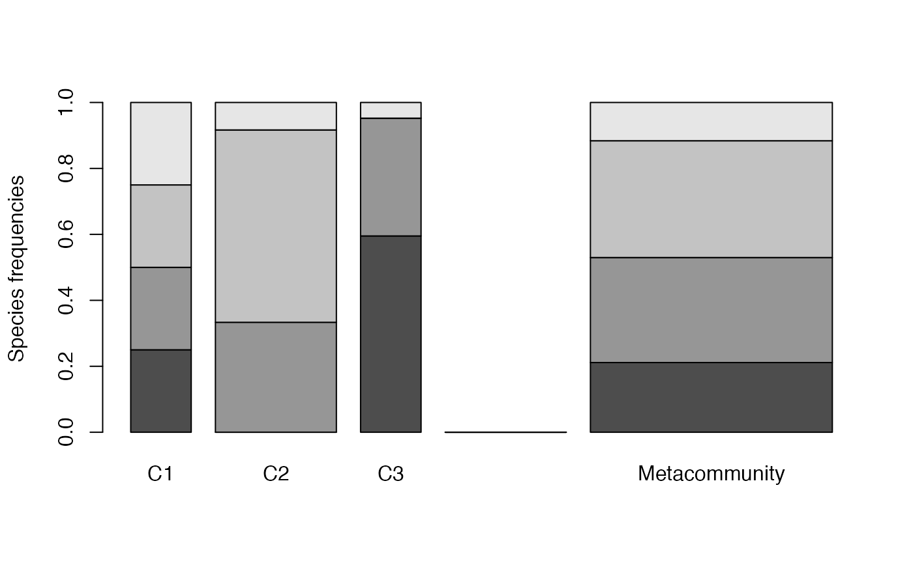
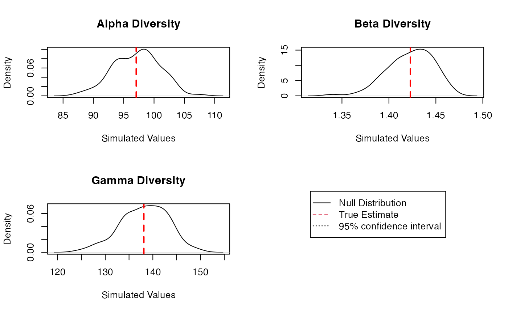
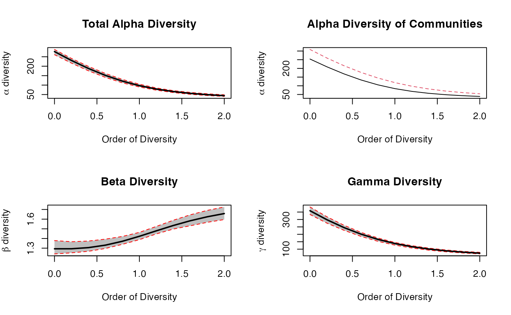
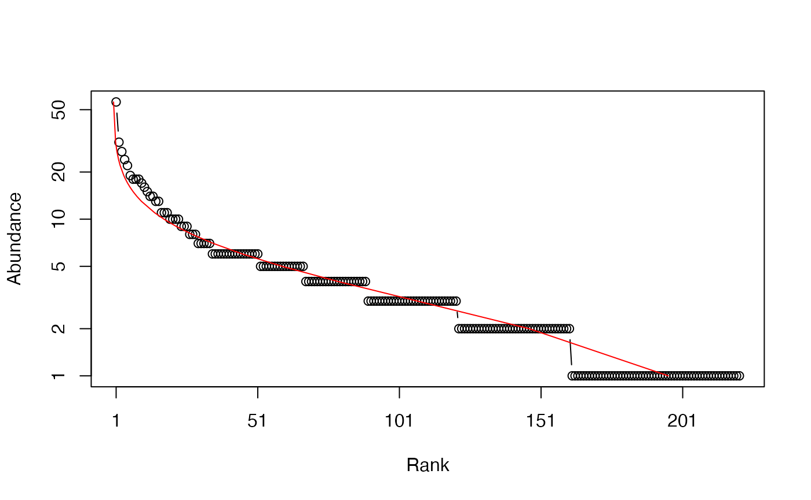
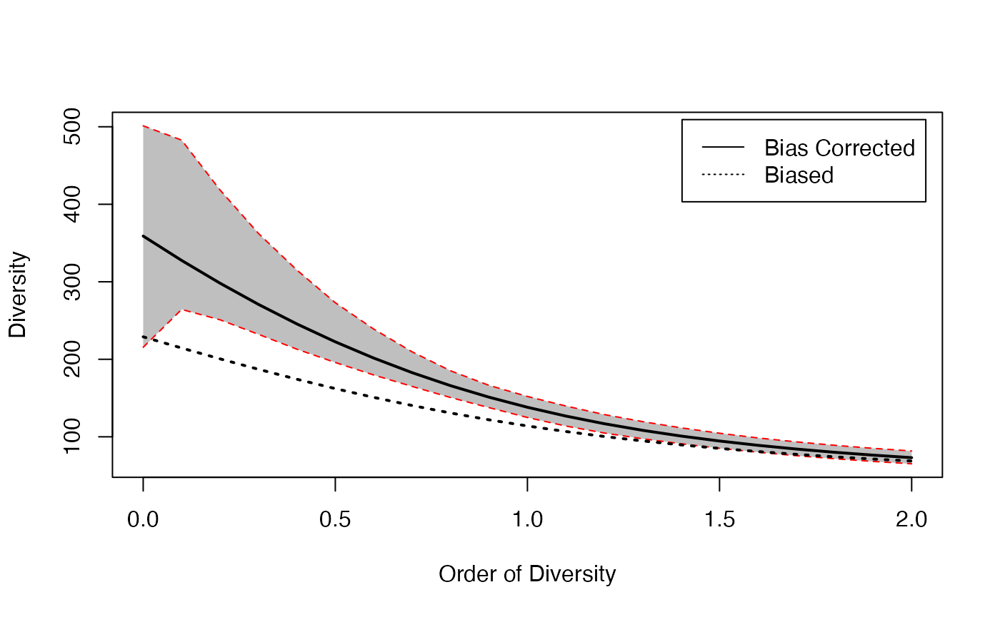

entropart is a package for R designed to estimate diversity based on HCDT entropy or similarity-based entropy.
Diversity measurement can be done through a quite rigorous framework based on entropy, i.e. the amount of uncertainty calculated from the frequency distribution of a community (Patil and Taillie 1982; Jost 2006; Marcon et al. 2014). Tsallis entropy, also known as HCDT entropy (Havrda and Charvát 1967; Daróczy 1970; Tsallis 1988), is of particular interest (Jost 2006; Marcon et al. 2014) namely because it gathers the number of species, Shannon (1948) and Simpson (1949) indices of diversity into a single framework. Interpretation of entropy is not straightforward but one can easily transform it into Hill numbers (Hill 1973) which have many desirable properties (Jost 2007): mainly, they are the number of equally-frequent species that would give the same level of diversity as the data.
Marcon and Hérault (2015a) generalized the duality of entropy and diversity, deriving the relation between phylogenetic or functional diversity (Chao, Chiu, and Jost 2010) and phylogenetic or functional entropy (we will write phylodiversity and phyloentropy for short), as introduced by Pavoine, Love, and Bonsall (2009). Special cases are the well-known PD (Faith 1992) and FD (Petchey and Gaston 2002) indices and Rao’s (1982) quadratic entropy. The same relation holds between Ricotta and Szeidl’s entropy of a community (Ricotta and Szeidl 2006) and similarity-based diversity (Leinster and Cobbold 2012).
The entropart package for R (R Core Team 2018) enables calculation of all these measures of diversity and entropy and their partitioning.
Diversity partitioning means that, in a given area, the \(\gamma\) diversity \(D_{\gamma}\) of all individuals found may be split into within (\(\alpha\) diversity, \(D_{\alpha}\)) and between (\(\beta\) diversity, \(D_{\beta}\)) local assemblages. \(\alpha\) diversity reflects the diversity of individuals in local assemblages whereas \(\beta\) diversity reflects the diversity of the local assemblages. Marcon et al. (2014) derived the decomposition of Tsallis \(\gamma\) entropy into its \(\alpha\) and \(\beta\) components, generalized to phylodiversity (Marcon and Hérault 2015a) and similarity-based diversity (Marcon, Zhang, and Hérault 2014).
Estimators of diversity are biased because of unseen species and also because they are not linear functions of probabilities (Marcon et al. 2014). \(\alpha\) and \(\gamma\) diversities are underestimated by naive estimators (Chao and Shen 2003; Dauby and Hardy 2012). \(\beta\) diversity is severely biased too when sampling is not sufficient (Beck, Holloway, and Schwanghart 2013). Bias-corrected estimators of phylodiversity have been developed by Marcon and Hérault (2015a). Estimators of similarity-based diversity were derived by Marcon, Zhang, and Hérault (2014). The package includes them all (Marcon and Hérault 2015b).
In summary, the framework supported by the package is as follows. First, an information function is chosen to describe the amount of surprise brought by the observation of each individual. In the simplest case of species-neutral diversity, it is just a decreasing function of probability: observing an individual of a rarer species brings more surprise. Various information functions allow evaluating species-neutral, phylogenetic or functional entropy. Surprise is averaged among all individuals of a community to obtain its entropy. Entropy is systematically transformed into diversity for interpretation. Diversity is an effective number of species, i.e. the number of equally-different and equally-frequent species that would give the same entropy as the data. The average entropy of communities of an assemblage is \(\alpha\) entropy, while the entropy of the assemblage is \(\gamma\) entropy. Their difference is \(\beta\) entropy. After transformation, \(\beta\) diversity is the ratio of \(\gamma\) to \(\alpha\) diversity. It is an effective number of communities, i.e. the number of equally-weighted communities with no species in common (and where species are maximally distinct between communities) necessary to obtain the same diversity as the data. Estimation-bias correction is more easily applied to entropy before transforming it into diversity.
This framework is somehow different from that of Chao, Chiu, and Jost (2014) who define \(\alpha\) diversity in another way (see Marcon and Hérault 2015a for a detailed comparison), such that \(\alpha\) entropy is not the average surprise of an assemblage. They also propose a definition of functional diversity (Chiu and Chao 2014) based in the information brought by pairs of individuals that is not supported in the package.
The successive sections of this paper presents the package features, illustrated by worked examples based on the data included in the package.
Package organization
Data
Most functions of the package calculate entropy or diversity of a
community or of an assemblage of communities called a
meta-community. Community functions accept a vector of
probabilities or of abundances for species data. Each element of the
vector contains the probability or the number of occurrences of a
species in a given community. Meta-community functions require a
particular data organization in a MetaCommunity object
described here.
A MetaCommunity is basically a list. Its main components
are $Nsi, a matrix containing the species abundances whose
lines are species, columns are communities and $Wi, a
vector containing community weights. Creating a
MetaCommunity object is the purpose of the
MetaCommunity function. Arguments are a dataframe
containing the number of individuals per species (lines) in each
community (columns), and a vector containing the community weights. The
following example creates a MetaCommunity made of three
communities of unequal weights with 4 species. The weighted average
probabilities of occurrence of species and the total number of
individuals define the meta-community as the assemblage of
communities.
library("entropart")
df <- data.frame(C1=c(10, 10, 10, 10), C2=c(0, 20, 35, 5), C3=c(25, 15, 0, 2))
row.names(df) <- c("sp1", "sp2", "sp3", "sp4")
df## C1 C2 C3
## sp1 10 0 25
## sp2 10 20 15
## sp3 10 35 0
## sp4 10 5 2
w <- c(1, 2, 1)
MC <- MetaCommunity(Abundances=df, Weights=w)
plot(MC)
Communities (named C1, C2 ad C3) are represented in the left part of the figure, the metacommunity to the right. Bar widths are proportional to community weights. Species abundances are represented vertically (4 species are present in the meta-community, only 3 of them in communities C2 and C3).
A meta-community is partitioned into several local communities (indexed by \(i=1, 2,\dots, I\)). \(n_i\) individuals are sampled in community \(i\). Let \(s=1,\ 2,\dots ,S\) denote the species that compose the meta-community, \(n_{s,i}\) the number of individuals of species \(s\) sampled in the local community \(i\), \(n_s=\sum_i{n_{s,i}}\) the total number of individuals of species \(s\), \(n=\sum_s{\sum_i{n_{s,i}}}\) the total number of sampled individuals. Within each community \(i\), the probability \(p_{s,i}\) for an individual to belong to species \(s\) is estimated by \(\hat{p}_{s,i}=n_{s,i}/{n_i}\). The same probability for the meta-community is \(p_s\).
Communities have a weight \(w_i\),
satisfying \(p_s=\sum_i{w_i p_{s,i}}\).
The commonly-used \(w_i=n_i/n\) is a
possible weight, but the weighting may be arbitrary (e.g. the sampled
areas). The component $Ps of a MetaCommunity
object contains the probability of occurrence of each species in the
meta-community, calculated this way:
MC$Ps## sp1 sp2 sp3 sp4
## 0.2113095 0.3184524 0.3541667 0.1160714The number of individuals $Ns of a
MetaCommunity is theoretically unknown, since communities
are just samples of it. The total number of individuals is
$N. For simplicity, it is set to the total number of
individuals of all communities. If community weights are their number of
individuals, $Ns is just the sum of the numbers of
individuals per species of communities. Else, $Ns may
contain non-integer values, respecting the probabilities
$Ps and summing to $N.
A MetaCommunity can be summarized and plotted.
The package contains an example dataset containing the inventory of two 1-ha tropical forest plots in Paracou, French Guiana (Marcon et al. 2012):
## Meta-community (class 'MetaCommunity') made of 1124 individuals in 2
## communities and 425 species.
##
## Its sample coverage is 0.92266748426447
##
## Community weights are:
## [1] 0.5720641 0.4279359
## Community sample numbers of individuals are:
## P006 P018
## 643 481
## Community sample coverages are:
## P006 P018
## 0.8943859 0.8463782Paracou618.MC is a meta-community made of two
communities named P006 and P018, containing 425
species (their name is Family_Genus_Species, abbreviated to 4
characters). The values of the abundance matrix are the number of
individuals of each species in each community. Sample coverage will be
explained later.
The dataset also contains a taxonomy and a functional tree.
Paracou618.Taxonomy is an object of class
phylo, defined in the package ape (Paradis, Claude, and Strimmer 2004), namely a
phylogenetic tree. This example data is only a taxonomy, containing
family, genus and species levels for the sake of simplicity.
Paracou618.Functional is an object of class
hclust containing a functional tree based on leaf, height,
stem and seed functional traits (Hérault and
Honnay 2007; Marcon and Hérault 2015a). The package also accepts
any ultrametric tree of class phylog, from ade4
(Dray and Dufour 2007) or
hclust. Paracou618.dist is the distance matrix
(actually a dist object) used to build the functional
tree.
Numeric vectors containing species abundances (such as the
$Ns component of MetaCommunity) or
probabilities (such as $Ps) may be converted to abundance
vectors (AbdVector) or probability vectors
(ProbaVector) to clarify their content. By default, the
as.AbdVector function transforms abundance values into
integer if they are not (the $Ns components of a
MetaCommunity is typically not an integer vector if
community weights are not proportional to their numbers of
individuals):
data("Paracou618")
PAbd <- as.AbdVector(Paracou618.MC$Ns)
plot(PAbd)the Paracou species distribution is plotted as a Rank-Abundance Curve (Whittaker plot).
The as.ProbaVector function transforms abundances to
probabilities if necessary:
PProba <- as.ProbaVector(Paracou618.MC$Ps)AbdVector and ProbaVector objects both are
SpeciesDistribution objects which can be plotted.
Utilities
The deformed logarithm formalism (Tsallis 1994) is very convenient to manipulate entropies. The deformed logarithm of order \(q\) is defined as:
\[\ln_q{x}=\frac{x^{1-q}-1}{1-q}\]
It converges to \(\ln\) when \(q\to 1\).
curve(log(x), 0, 1, lty=1, ylab = expression(ln[q](x)))
curve(lnq(x, 0), 0, 1, lty = 2, add = TRUE)
curve(lnq(x, 2), 0, 1, lty = 3, add = TRUE)
curve(lnq(x, 3), 0, 1, lty = 4, add = TRUE)
legend("bottomright", legend = c(expression(ln[0](x)), "ln(x)", expression(ln[2](x)), expression(ln[3](x))), lty = c(2, 1, 3, 4), inset= 0.02)The figure shows the curves of \(\ln_q{x}\) for different values of \(q\) between 0 and 4 (\(\ln_1{x}=\ln{x}\)).
The inverse function of \(\ln_q{x}\) is the deformed exponential:
\[e^x_q=[1+(1-q)x]^{\frac{1}{1-q}}\]
Functions of the package are lnq(x, q) and
expq(x, q).
Species-neutral diversity
Community functions
HCDT entropy
Species-neutral HCDT entropy of order \(q\) of a community is defined as:
\[^q\!H=\frac{1-\sum_s{p^q_s}}{q-1}=-\sum_s{p^q_s}\ln_q{p_s}=\sum_s{p_s}\ln_q{\frac{1}{p_s}}\]
\(q\) is the order of diversity
(e.g.: 1 for Shannon). Entropy can be calculated by the
Tsallis function. Paracou meta-community entropy of order 1
is:
Tsallis(PProba, q = 1)## None
## 4.736023For convenience, special cases of entropy of order \(q\) have a clear-name function:
Richess for \(q=0\),
Shannon for \(q=1\),
Simpson for \(q=2\).
Shannon(PProba)## None
## 4.736023Entropy values have no intuitive interpretation in general, except for the number of species \(^0\!H\) and Simpson entropy \(^2\!H\) which is the probability for two randomly chosen individuals to belong to different species.
Sample coverage
A useful indicator of sampling quality is the sample coverage (Good 1953; Chao, Lee, and Chen 1988; Zhang and Huang 2007), that is to say the probability for a species of the community to be observed in the actual sample. It equals the sum of the probability of occurrences of all observed species. Its historical estimator is (Good 1953):
\[\hat{C}=1-\frac{S^1}{n}\]
\(S^1\) is the number of singletons
(species observed once) of the sample, and \(n\) is its size. The estimator has been
improved by taking into account the whole distribution of species (Zhang and Huang 2007). The
Coverage function calculates it, allowing to choose the
estimator:
Coverage(PAbd)## ZhangHuang
## 0.9226675The sample coverage cannot be estimated from probability data: abundances are required.
Its interpretation is straightforward: some species have not been
sampled. Their number is unknown but their total probability of
occurence can be estimated accurately. Here, it is a bit less than 8%.
From another point of view, the probability for an individual of the
community to belong to a sampled species is \(C\): 8% of them belong to missed species.
The number of missed species may be estimated by Richness
but this is not the point here. The sample coverage is the foundation of
many estimators of entropy.
Bias corrected estimators
Correction of estimation bias is used to improve the estimation of
entropy despite unobserved species and also mathematical issues (Bonachela, Hinrichsen, and Muñoz 2008).
Bias-corrected estimators (often relying on sample coverage) are
returned by functions whose names are prefixed by bc, such
as bcTsallis. They are similar to the non-corrected ones
but they use abundance data and propose several bias-correction
techniques to select in the Correction argument. A
Best correction is calculated by default, detailed in the help
file of each function.
bcTsallis(PAbd, q = 1)## UnveilJ
## 4.928035The best correction for Tsallis entropy follows Chao and Jost (2015). It combines an unbiased estimator previously derived by Zhang and Grabchak (2016) and an estimate of the remaining bias.
All community functions such as Tsallis are actually
generic methods that can handle several types of data the appropriate
way: if the first argument of the function is a ProbaVector
(or a numeric vector summing to 1), no bias correction is applied. If it
is an AbdVector (or an integer vector), the bias-corrected
estimator is used (e.g. bcTsallis). Numeric vectors summing
to more than 2 are considered as abundances but most bias corrections do
not allow non-integer values and return a warning.
The different ways to use the functions are a matter of personal
preference. bcTsallis is equivalent to Tsallis
with an abundance vector:
Tsallis(PAbd, q = 1)## UnveilJ
## 4.928035whilst Tsallis with a probability vector does not allow
bias correction:
Tsallis(PProba, q = 1)## None
## 4.736023Bias-corrected entropy is ready to be transformed into explicit diversity.
Effective numbers of species
Entropy should be converted into true diversity (Jost 2007), i.e. effective number of species equal to Hill (1973) numbers:
\[^q\!D={\left(\sum_s{p^q_s}\right)}^{\frac{1}{1-q}}\]
This can be done by the deformed exponential function, or using
directly the Diversity or bcDiversity
functions (equal to the deformed exponential of order \(q\) of Tsallis or
bcTsallis)
## UnveilJ
## 73.09335
Diversity(PAbd, q = 2)## UnveilJ
## 73.09335The effective number of species of the Paracou dataset is estimated to be 73 after bias correction (rather than 69 without it). It means that a community made of 73 equally-frequent species has the same Simpson entropy as the actual one. This is much less than the actual 425 sampled species. Simpson’s entropy focuses on dominant species.
Hurlbert’s diversity
Hurlbert’s index of diversity (Hurlbert 1971) of order \(k\) is the expected number of species observed in a sample of size \(k\).
\[_k\!S = \sum_{s}{\left[ 1-\left( 1-p_s \right)^k \right]}\]
Greater values of \(k\) give more importance to rare species.
An unibiased estimator of \(_k\!S\) has been provided by Hurlbert, for values of \(k\) up to the sample size \(n\):
\[_k\!\hat{S} = \sum_{s}{\left[ 1- \binom{n-n_s}{k} / \binom{n}{k} \right]}\]
The effective number of species \(_k\!D\) can be found by solving the following equation (Dauby and Hardy 2012):
\[_k\!S = {_k\!D} \left[1-{\left(1-\frac{1}{_k\!D}\right)}^k\right]\]
Hurlbert’s index is calculated by the Hurlbert function.
Its unbiased estimator is obtained by bcHurlbert
(implicitly if an abundance vector is used). Its effective number of
species is caclulated by HurlbertD or
bcHurlbertD.
Hurlbert(PProba, k = 2)## Biased
## 1.985449
Hurlbert(PAbd, k = 2)## Unbiased
## 1.986326
HurlbertD(PAbd, k = 2)## Unbiased
## 73.13163Hurlbert’s diversity of order 2 is identical to Simpson’s diversity.
Meta-community functions
Meta-community functions allow partitioning diversity according to Patil and Taillie’s concept of diversity of a mixture (Patil and Taillie 1982), i.e. \(\alpha\) entropy of a meta-community is defined as the weighted average of community entropy, following Routledge (1979):
\[^q\!H_{\alpha}=\sum_i w_i \,^q_iH_{\alpha}\]
\(^q_iH_{\alpha}\) is the entropy of community \(i\):
\[^q_i\!H_{\alpha}=\frac{1-\sum_s{p^q_{s,i}}}{q-1} =-\sum_s{p^q_{s,i}}\ln_q{p_{s,i}} =\sum_s{p_{s,i}}\ln_q{\frac{1}{p_{s,i}}}\]
Jost’s (2007) definition of \(\alpha\) entropy is not supported explicitly in the package since it only allows partitioning of equally weighted communities. In this particular case, both definitions are identical.
\(\gamma\) entropy of the meta-community is defined as \(\alpha\) entropy of a community. \(\beta\) entropy, the difference between \(\gamma\) and \(\alpha\), is the generalized Jensen-Shannon divergence between the species distribution of the meta-community and those of communities (Marcon et al. 2014):
\[^q\!H_{\beta} =^q\!H_{\gamma}-^q\!H_{\alpha} =\sum_s{p^q_{s,i}\ln_q\frac{p_{s,i}}{p_s}} =\sum_s{p_{s,i}\ln_q\frac{p_s}{p_{s,i}}}\]
\(\beta\) entropy should be transformed into diversity, i.e. an effective number of communities: \[^q\!D_{\beta}=e^{\frac{^q\!H_{\beta}}{1-(q-1)^q\!H_{\alpha}}}_q\]
Basic meta-community functions
These values can be estimated by the meta-community functions named
AlphaEntropy, AlphaDiversity,
BetaEntropy, BetaDiversity. They accept a
Metacommunity and an order of diversity \(q\) as arguments, and return an
MCentropy or MCdiversity object which can be
summarized and plotted. GammaEntropy and
GammaDiversity return a number. Estimation-bias corrections
are applied by default:
e <- AlphaEntropy(Paracou618.MC, q = 1)
summary(e)## Neutral alpha entropy of order 1 of metaCommunity Paracou618.MC
## with correction: Best
##
## Entropy of communities:
## P006 P018
## 4.427559 4.772981
## Average entropy of the communities:
## [1] 4.575378The Shannon \(\alpha\) entropy of the meta-community is 4.58. It is the weighted average entropy of communities.
The estimation of the diversity of a meta-community whose numbers of
individuals$Ns are not integer values can’t be done with
most corrections, which do require integers. The Grassberger correction
can be used. Community data is pooled to obtain a global inventory whose
sample coverage is estimated. The Chao-Shen correction can also be
applied based on this sample coverage and the actual $Ps
values of the meta-community. Finally, the Best correction is
the greater of the two values obtained by Chao-Shen and Grassberger
(Marcon et al. 2014).
Diversity Partition of a metacommunity
The DivPart function calculates everything at once. Its
arguments are the same but bias correction is not applied by default. It
can be, using the argument Biased = FALSE, and the
correction chosen by the argumentCorrection. It returns a
DivPart object which can be summarized (entropy is not
printed by summary) and plotted:
## HCDT diversity partitioning of order 1 of metaCommunity Paracou618.MC
## with correction: UnveilJ
## Alpha diversity of communities:
## P006 P018
## 83.7268 118.2713
## Total alpha diversity of the communities:
## [1] 97.06467
## Beta diversity of the communities:
## UnveilJ
## 1.422843
## Gamma diversity of the metacommunity:
## UnveilJ
## 138.1078
p$CommunityAlphaEntropies## P006 P018
## 4.427559 4.772981
plot(p)The \(\alpha\) diversity of communities is 97 effective species (it is the exponential of the entropy calculated previously). This is more than Simpson’s diversity 73 species, calculated above) because less frequent species are taken into account. \(\gamma\) diversity of the meta-community is 138 effective species. \(\beta\) diversity is 1.42 effective communities, i.e. the two actual communities are as different from each other as 1.42 ones with equal weights and no species in common.
The figure is the plot of the diversity partition of the
meta-community Paracou618.MC. The long rectangle of height
1 represents \(\gamma\) diversity,
equal to 138 effective species. The narrower and higher rectangle has
the same area: its horizontal size is \(\alpha\) diversity (97 effective species)
and its height is \(\beta\) diversity
(1.42 effective communities).}
Diversity Estimation of a metacommunity
The DivEst function decomposes diversity and estimates
confidence interval of \(\alpha\),
\(\beta\) and \(\gamma\) diversity following Marcon et al. (2012). If the observed species
frequencies of a community are assumed to be a realization of a
multinomial distribution, they can be drawn again to obtain a
distribution of entropy.
de <- DivEst(q = 1, Paracou618.MC, Biased = FALSE, Correction = "Best", Simulations = 100)
summary(de)## Diversity partitioning of order 1 of MetaCommunity Paracou618.MC
## with correction: UnveilJ
## Alpha diversity of communities:
## P006 P018
## 83.7268 118.2713
## Total alpha diversity of the communities:
## [1] 97.06467
## Beta diversity of the communities:
## UnveilJ
## 1.422843
## Gamma diversity of the metacommunity:
## UnveilJ
## 138.1078
## Quantiles of simulations (alpha, beta and gamma diversity):
## 0% 1% 2.5% 5% 10% 25% 50% 75%
## 86.49128 88.18629 88.93663 90.15146 91.07337 94.77914 97.21186 99.67938
## 90% 95% 97.5% 99% 100%
## 102.11207 103.56567 104.54711 106.68339 107.40263
## 0% 1% 2.5% 5% 10% 25% 50% 75%
## 1.373889 1.376268 1.378873 1.389720 1.392941 1.408992 1.420861 1.438186
## 90% 95% 97.5% 99% 100%
## 1.450181 1.471407 1.472561 1.473149 1.475502
## 0% 1% 2.5% 5% 10% 25% 50% 75%
## 127.4125 127.6255 128.4695 129.4677 130.1285 134.8554 138.8269 141.3669
## 90% 95% 97.5% 99% 100%
## 145.0758 148.1377 148.8794 150.2797 153.6684
plot(de)## Warning in int_abline(a = a, b = b, h = h, v = v, untf = untf, ...): NAs
## introduced by coercion
## Warning in int_abline(a = a, b = b, h = h, v = v, untf = untf, ...): NAs
## introduced by coercion
## Warning in int_abline(a = a, b = b, h = h, v = v, untf = untf, ...): NAs
## introduced by coercion
## Warning in int_abline(a = a, b = b, h = h, v = v, untf = untf, ...): NAs
## introduced by coercion
## Warning in int_abline(a = a, b = b, h = h, v = v, untf = untf, ...): NAs
## introduced by coercion
## Warning in int_abline(a = a, b = b, h = h, v = v, untf = untf, ...): NAs
## introduced by coercion
The result is a Divest object which can be summarized
and plotted. On the figure of the diversity estimation of the
meta-community Paracou618.MC, \(\alpha\), \(\beta\) and \(\gamma\) diversity probability densities
are plotted, with a 95% confidence interval.
The uncertainty of estimation is due to sampling: the distribution of the estimators corresponds to the simulated repetitions of sampling in the original multinomial distribution of species. It ignores the remaining bias of the estimator, which is unknown. Yet, except for \(q=2\), the corrected estimators are biased (even though much less than the non-corrected ones), especially when \(q\) is small. New estimators to reduce the bias are included in the package regularly.
Diversity Profile of a metacommunity
DivProfile calculates diversity profiles, i.e. the value
of diversity against its order. The result is a DivProfile
object which can be summarized and plotted.
dp <- DivProfile(seq(0, 2, 0.2), Paracou618.MC, Biased = FALSE, NumberOfSimulations = 20)
summary(dp)## Diversity profile of MetaCommunity Paracou618.MC
## with correction: UnveilJ
## Diversity against its order:
## Order Alpha Diversity Beta Diversity Gamma Diversity
## UnveilJ 0.0 277.53648 1.293524 359.00000
## UnveilJ 0.2 230.43524 1.293933 298.16776
## UnveilJ 0.4 188.11846 1.305629 245.61294
## UnveilJ 0.6 151.41091 1.331320 201.57635
## UnveilJ 0.8 121.00956 1.371445 165.95797
## UnveilJ 1.0 97.06467 1.422843 138.10783
## UnveilJ 1.2 79.01317 1.479377 116.89026
## UnveilJ 1.4 65.79132 1.534463 100.95435
## UnveilJ 1.6 56.21256 1.583490 89.01206
## UnveilJ 1.8 49.24224 1.624534 79.99569
## UnveilJ 2.0 44.09399 1.657672 73.09335
plot(dp)
The figure shows the diversity profile of the meta-community
Paracou618.MC. Values are the number of effective species
(\(\alpha\) and \(\gamma\) diversity) and the effective
number of communities (\(\beta\)
diversity). Community P006 is represented by the solid line and
community P018 by the dotted line. \(\alpha\) and \(\gamma\) diversity decrease from \(q=0\) (number of species) to \(q=2\) (Simpson diversity) by
construction.}
Small orders of diversity give more weight to rare species. P018 can be considered more diverse than P006 because their profiles (top right of the figure) do not cross (Tothmeresz 1995): its diversity is systematically higher. The shape of the \(\beta\) diversity profile shows that the communities are more diverse when their dominant species are considered.
The bootstrap confidence intervals of the values of diversity (Marcon et al. 2012, 2014) are calculated if
NumberOfSimulations is not 0.
Alternative functions
Beta entropy can also be calculated by a set of functions named after
the community functions, such as TsallisBeta,
bcTsallisBeta, SimpsonBeta, etc. which require
two vectors of abundances or probabilities instead of a
MetaCommunity object: that of the community and the
expected one (usually that of the meta-community). Bias correction is
currently limited to Chao and Shen’s correction. The example below
calculates the Shannon \(\beta\)
entropy of the first community of Paracou618 and the meta-community.
ShannonBeta(Paracou618.MC$Psi[, 1], PProba)## None
## 0.3499358These functions are available for particular uses, when a
MetaCommunity is not available or not convenient to use
(e.g. simulations). Meta-community functions are preferred in
general.
Phylogenetic diversity
Phylogenetic or functional diversity generalizes HCDT diversity, considering the distance between species (Marcon and Hérault 2015a). Here, all species take place in an ultrametric phylogenetic or functional tree.

Hypothetical ultrametric tree
The tree is cut into slices, delimited by two nodes: the hypothetical tree of the figure (a) contains three slices, delimited by two nodes. The first slice starts at the bottom of the tree and ends at the first node. In slice \(k\), \(L_k\) leaves are found. The length of slices is \(T_k\). The probabilities of occurrence of the species belonging to branches that were below leaf \(l\) in the original tree are summed to give the grouped probability \(u_{k,l}\). Figure (b) focuses on slice 2. The tree without slice 1 is reduced to 3 leaves. Frequencies of collapsed species are \(u_{k,l}\). Figure (c) shows slice 3 only.
HCDT entropy can be calculated in slice \(k\):
\[^q_k{H}=-\sum_l{u_{k,l}} \ln_q{(1/u_{k,l})}\]
Then, it is summed over the tree slices. Phyloentropy can be normalized or not. We normalize it so that it does not depend on the tree height:
\[^q\overline{H}\left( T \right) = \sum^K_{k=1}{\frac{T_k}{T}{^q_k{\!H}}}\]
Unnormalized values are multiplied by the height of the tree, such as \(^q\!\mathit{PD}(T)\) (Chao, Chiu, and Jost 2010).
Phyloentropy is calculated as HCDT entropy along the slices of the trees applying possible estimation-bias corrections, summed, possibly normalized, and finally transformed into diversity:
\[^q\overline{D}\left( T \right) = e^{^q\overline{H}\left( T \right)}_q\]
Community functions
PhyloEntropy and the estimation-bias-corrected
bcPhyloEntropy are the phylogenetic analogs of
Tsallis and bcTsallis. They accept the same
arguments plus an ultrametric tree of class phylo,
hclust or phylog and Normalize a
boolean to normalize the tree height to 1 (by default).
Phylogenetic diversity is calculated by PhyloDiversity
or bcPhyloDiversity analogous to the species-neutral
diversity functions Diversity and
bcDiversity.
Results are either a PhyloDiversity or a
PhyloEntropy object, which can be plotted and
summarized.
phd <- bcPhyloDiversity(PAbd, q = 1, Tree = Paracou618.Taxonomy, Normalize = TRUE)
summary(phd)## alpha or gamma phylogenetic or functional diversity of order 1 of distribution
## PAbd
## with correction: Best
## Phylogenetic or functional diversity was calculated according to the tree
## Paracou618.Taxonomy
##
## Diversity is normalized
##
## Diversity equals: 55.64502
plot(phd, main = "")The figure shows the \(\gamma\)
phylodiversity estimation of the meta-community
Paracou618.MC. The effective number of taxa of Shannon
diversity is plotted against the distance from the leaves of the
phylogenetic tree. Here, the tree is based on a rough taxonomy, so
diversity of species, genera and families are the three levels of the
curve. The dotted line represents the value of phylodiversity.
The phylogenetic diversity of order 1 of the Paracou dataset is 56 effective species: 56 totally different species (only connected by the root of the tree) with equal probabilities would have the same entropy. It can be compared to its species-neutral diversity: 138 species. The latter is the diversity of the first slice of the tree. When going up the tree, diversity decreases because species collapse. On the figure, the diversity of the second slice, between \(T=1\) and \(T=2\), is that of genera (64 effective genera) and the last slice contains20 effective families. The phylogenetic entropy of the community is the average of the entropy along slices, weighted by the slice lengths. Diversity can not be averaged the same way.
A less trivial phylogeny would contain many slices, resulting in as many diversity levels with respect to \(T\).
The AllenH function is close to
PhyloEntropy: it also calculates phyloentropy but the
algorithm is that of Allen, Kon, and Bar-Yam
(2009) for \(q=1\) and that of
Leinster and Cobbold (2012) for \(q \ne 1\). It is much faster since it does
not require calculating entropy for each slice of the tree but it does
not allow estimation-bias correction. ChaoPD calculates
phylodiversity according to Chao, Chiu, and Jost
(2010), with the same advantages and limits compared to
PhyloDiversity.
For convenience, PDFD and Rao functions are
provided to calculate unnormalized phyloentropy of order 0 and 2.
Meta-community functions
DivPart, DivEst and DivProfile
functions return phylogenetic entropy and diversity values instead of
species-neutral ones if a tree is provided in the arguments.
dp <- DivPart(q = 1, Paracou618.MC, Biased = FALSE, Correction = "Best", Tree = Paracou618.Taxonomy)
summary(dp)## HCDT diversity partitioning of order 1 of metaCommunity Paracou618.MC
## with correction: UnveilJ UnveilJ UnveilJ
## Phylogenetic or functional diversity was calculated
## according to the tree
## Paracou618.Taxonomy
##
## Diversity is normalized
##
## Alpha diversity of communities:
## P006 P018
## 37.42057 53.73643
## Total alpha diversity of the communities:
## [1] 43.6882
## Beta diversity of the communities:
## [1] 1.273686
## Gamma diversity of the metacommunity:
## [1] 55.64502The decomposition is interpreted as the species-neutral one: \(\gamma\) diversity is 56 effective species, made of 1.3 effective communities of 44 effective species.
Other meta-community functions, such as AlphaEntropy
behave the same way:
summary(BetaEntropy(Paracou618.MC, q = 2, Tree = Paracou618.Taxonomy, Correction = "None", Normalize = FALSE))## HCDT beta entropy of order 2 of metaCommunity Paracou618.MC with correction:
## None
##
## Phylogenetic or functional entropy was calculated according to the tree
## Paracou618.Taxonomy
##
## Entropy is not normalized
## Entropy of communities:
## P006 P018
## 0.04117053 0.02325883
## Average entropy of the communities:
## [1] 0.03350547Compare with Rao’s divc computed by ade4:
library("ade4")
divc(as.data.frame(Paracou618.MC$Wi), disc(as.data.frame(Paracou618.MC$Nsi), Paracou618.Taxonomy$Wdist))## diversity
## Paracou618.MC$Wi 0.009845941The decomposition of the diversity of meta-communities with non
integer $Ns starts with the estimation of \(\gamma\) diversity. The best estimator is
found for each slice of the tree. It is then used to estimate \(\alpha\) diversity.
Similarity-based diversity
Leinster and Cobbold (2012) introduced similarity-based diversity of a community \(^qD^Z\). A matrix \(\mathbf{Z}\) describes the similarity between pairs of species, defined between 0 and 1. A species ordinariness is its average similarity with all species (weighted by species frequencies), including similarity with itself (equal to 1). Similarity-based diversity is the reciprocal of the generalized average of order \(q\) (Hardy, Littlewood, and Pólya 1952) of the community species ordinariness.
The Dqz function calculates similarity-based diversity.
Its arguments are the vector of probabilities of occurrences of the
species, the order of diversity and the similarity matrix \(\mathbf{Z}\). The bcDqz
function allows estimation-bias correction (Marcon, Zhang, and Hérault 2014).
This example calculates the \(\gamma\) diversity of the meta-community Paracou. First, the similarity matrix is calculated from the distance matrix between all pairs of species as 1 minus normalized dissimilarity.
DistanceMatrix <- as.matrix(Paracou618.dist)
Z <- 1 - DistanceMatrix/max(DistanceMatrix)
bcDqz(PAbd, q = 2, Z)## Best
## 1.48295If \(\mathbf{Z}\) is the identity matrix, similarity-based diversity equals HCDT diversity:
## None
## 68.7215
Diversity(PProba, q = 2)## None
## 68.7215Functional diversity of order 2 is only 1.48 effective species, which is very small compared to 69 effective species for Simpson diversity. 1.48 equally-frequent species with similarity equal to 0 would have the same functional diversity as the actual community (made of 425 species). This means that species are very similar from a functional point of view. The very low values returned by \(^qD^Z\) are questioned by Chao, Chiu, and Jost (2014) and discussed in depth by Marcon, Zhang, and Hérault (2014): the choice of the similarity matrix is not trivial.
The similarity-based entropy of a community \(^qH^Z\) [Leinster
and Cobbold (2012); Ricotta2006] has the same relations with
diversity as HCDT entropy and Hill numbers. The Hqz
function calculates it:
Hqz(PProba, q = 2, Z)## None
## 0.3208152## None
## 0.3208152As species-neutral entropy, \(^qH^Z\) has no straightforward interpretation beyond the average surprise of a community.
All meta-community functions can be used to estimate similarity-based
diversity: argument Z must be provided:
e <- AlphaEntropy(Paracou618.MC, q = 1, Z = Z)
summary(e)## Similarity-based alpha entropy of order 1 of metaCommunity Paracou618.MC
## with correction: Best
##
## Phylogenetic or functional entropy was calculated according to the similarity matrix
## Z
##
## Entropy of communities:
## P006 P018
## 0.3945541 0.3934725
## Average entropy of the communities:
## [1] 0.3940912The \(\alpha\) functional entropy of the meta-community is the average entropy of communities.
Advanced tools
The package comes with a set of tools to realize frequents tasks: run Monte-Carlo simulations on a community, quickly calculate its diversity profile, apply a function to a species distribution along a tree, and manipulate meta-communities.
Random communities
The rCommunity function allows creating random
communities. Their species probability distribution can be drawn in a
well-known distribution (such as a log-normal one) or obtained from the
data, just by dividing abundances by the total number of individuals
(Marcon et al. 2012), or derived from a
more sophisticated model by Chao and Jost
(2015). Finally, the specified number of communities are drawn in
a multinomial distribution.
The log-normal (Preston 1948), the log-series (Fisher, Corbet, and Williams 1943), the geometric (Motomura 1932), and the broken-stick (MacArthur 1957) distributions can be simulated.
This example code draws a single community of 1000 individuals according to a log-normal distribution with 300 species. Many species are not observed in the 1000-individual sample: the observed number of species is shown, with an estimation of the actual number (which should be 300). The simulated community is plotted (a Whittaker plot), with its log-normal distribution fitted from the data. Estimated parameters can be compared to the original ones.
rCommunity(n = 1, size = 1000, S=300, Distribution = "lnorm", sd=1) -> NsRef
Richness(as.ProbaVector(NsRef))## None
## 229
Richness(NsRef)## Jackknife 2
## 319
plot(NsRef, Distribution="lnorm")
## $mu
## [1] 1.037855
##
## $sigma
## [1] 0.8901462Entropy of Monte-Carlo simulated communities
The EntropyCI function is a versatile tool to simplify
simulations. Simulated communities are obtained by random draws in a
multinomial distribution of species and their entropy is calculated. The
arguments of EntropyCI are an entropy function (any entropy
function of the package accepting a vector of species abundances, such
as bcTsallis), the number of simulations to run, the
observed species frequencies and the method to obtain probabilities for
the multinomial distribution (the same as that of
rCommunity).
The result is a numeric vector containing the entropy value of each simulated community. Entropy can be finally transformed into diversity (but it is not correct to use a diversity function in simulations because the average simulated value must be calculated and only entropy can be averaged).
This example shows how to use the function. First, the distribution of the \(\gamma\) HCDT entropy of order 1 (Shannon entropy) of the Paracou meta-community is calculated and transformed into diversity. Then, the actual diversity is calculated and completed by the 95% confidence interval of the simulated values.
Diversity(PAbd, q = 1)## UnveilJ
## 138.1078## 2.5% 97.5%
## 127.8719 149.0098These results are identical to those of the DivEst
function but a single community can be addressed (DivEst
requires a MetaCommunity).
Diversity or Entropy Profile of a community
This function is used to calculate diversity or entropy profiles
based on community functions such as Tsallis or
ChaoPD. It is similar to DivProfile but does
not require a Metacommunity for argument. It can compute a
bootstrap confidence envelope of the estimation of the profile, like
EntropyCI. It returns a CommunityProfile
object which can be plotted. Profiles can be added to an existing plot
by the CEnvelope function.
This example evaluates bias correction on the diversity profile of the Paracou dataset. First, diversity profiles are calculated with and without bias correction. The corrected profile is calculated with its confidence envelope:
bcProfile <- CommunityProfile(Diversity, PAbd, NumberOfSimulations = 100)
Profile <- CommunityProfile(Diversity, PProba)Then, they can be plotted altogether to obtain the \(\gamma\) diversity profile of the the
meta-community Paracou618.MC, without bias correction
(dotted line) and with correction (solid line):
plot(bcProfile)
CEnvelope(Profile, lty=3)
legend("topright", c("Bias Corrected", "Biased"), lty=c(1,3), inset=0.02)
Applying a Function over a Phylogenetic Tree
The PhyloApply function is used to apply an entropy
community function (generally bcTsallis) along a tree, the
same way lapply works with a list.
This example shows how to calculate Shannon entropy along the tree containing the taxonomy to obtain species, genus and family entropy:
pa <- PhyloApply(Tree=Paracou618.Taxonomy, FUN=bcTsallis, NorP=PAbd)
summary(pa)## bcTsallis applied to PAbd along the tree: Paracou618.Taxonomy
##
## Results are normalized
##
## The average value is: 4.018993
##
## Values along the tree are:
## 1 2 3
## 4.928035 4.151312 2.977631
exp(pa$Cuts)## 1 2 3
## 138.10783 63.51727 19.64124
exp(pa$Total)## [1] 55.64502Manipulation of meta-communities
Several meta-communities, combined in a list, can be merged two
different ways. The MergeMC function simplifies
hierarchical partitioning of diversity: it considers the aggregated data
of each meta-community as a community and builds an upper-level
meta-community with them. The \(\alpha\) entropy of the new meta-community
is the weighted average \(\gamma\)
entropy of the original meta-communities.
MergeC combines the communities of several
meta-communities to create a single meta-community containing them all.
Last, ShuffleMC randomly shuffles communities accross
meta-communities to allow simulations to test differences between
meta-communities.
This example shows how to do this. A first meta-community is created, weights of communities are proportional to their number of individuals:
(df <- data.frame(C1 = c(10, 10, 10, 10), C2 = c(0, 20, 35, 5),
C3 = c(25, 15, 0, 2), row.names = c("sp1", "sp2", "sp3", "sp4")))## C1 C2 C3
## sp1 10 0 25
## sp2 10 20 15
## sp3 10 35 0
## sp4 10 5 2
w <- colSums(df)
MC1 <- MetaCommunity(Abundances = df, Weights = w)Then a second one:
(df <- data.frame(C1 = c(10, 4), C2 = c(3, 4), row.names = c("sp1", "sp5")))## C1 C2
## sp1 10 3
## sp5 4 4
w <- colSums(df)
MC2 <- MetaCommunity(Abundances = df, Weights = w)They can be merged to obtain a single meta-community containing all original communities:
## MC1.C1 MC1.C2 MC1.C3 MC2.C1 MC2.C2
## sp1 10 0 25 10 3
## sp2 10 20 15 0 0
## sp3 10 35 0 0 0
## sp4 10 5 2 0 0
## sp5 0 0 0 4 4They can also be merged considering each of them as a community of a higher-level meta-community:
mergedMC2 <- MergeMC(list(MC1, MC2), Weights = vapply(list(MC1, MC2), function(x) (x$N), FUN.VALUE=0.0))
mergedMC2$Nsi## MC1 MC2
## sp1 35 13
## sp2 45 0
## sp3 45 0
## sp4 17 0
## sp5 0 8Hierarchical diversity partitioning can then be achieved:
## HCDT diversity partitioning of order 1 of metaCommunity mergedMC2
##
## Alpha diversity of communities:
## MC1 MC2
## 3.772161 1.943574
## Total alpha diversity of the communities:
## [1] 3.463277
## Beta diversity of the communities:
## None
## 1.236351
## Gamma diversity of the metacommunity:
## None
## 4.281826The \(\gamma\) diversity of the top assemblage (MC1 and MC2) is 4.28 effective species, made of 1.24 effective meta-communities of 3.46 effective species. The \(\alpha\) diversity of each meta-community of the top assemblage is their \(\gamma\) diversity when it is partitioned in turn:
## HCDT diversity partitioning of order 1 of metaCommunity MC1
##
## Alpha diversity of communities:
## C1 C2 C3
## 4.000000 2.429521 2.273918
## Total alpha diversity of the communities:
## [1] 2.741671
## Beta diversity of the communities:
## None
## 1.375862
## Gamma diversity of the metacommunity:
## None
## 3.772161The \(\gamma\) diversity of MC1 is 3.77 effective species, made of 1.38 effective meta-communities of 2.74 effective species. The same decomposition can be applied to MC2.